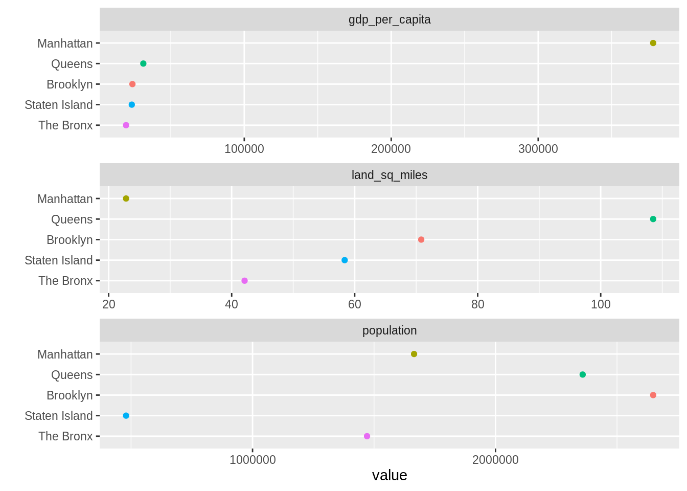

22 Importing Data
This chapter originated as a community contribution created by ZhangZhida
This page is a work in progress. We appreciate any input you may have. If you would like to help improve this page, consider contributing to our repo.
22.1 Overview
This section covers how to import data from built-in R sources, local files, web sources and databases.
22.2 Import built-in dataset
R comes with quite a lot of built-in datasets, which R users can play around with. You are probably familiar with many of the built-in datasets like iris, mtcars, beavers, dataset, etc. Since datasets are preloaded, we can manipulate them directly. To see a full list of built-in R datasets and their descriptions, please refer to The R Datasets Package. We can also run data() to view the full list.
The most convenient option for viewing is ??datasets since provides a list of datasets in the Help pane. Clicking on a dataset will bring up its help file. There’s lots of important information about the sources of the data and the meaning of the variables in these help files, so be sure to check them out.
Most datasets are lazy-loaded, which means that although they don’t appear as objects in the global environment, they are there when you reference them. However, for some packages, you must use data() to access the datasets, as follows:
This is a common source of frustration for students: “I installed the library and loaded the package but the data’s not there!” Forewarned is forearmed. Packages that we use that fall in this category include: lawstat, pgmm, and others. (Submit a PR to add to this list.)
22.3 Import local data
This section covers base R functions for reading data. For tidyverse versions (read_csv, read_delim, read_table, etc.) see the Data Import chapter of *R for Data Science.)
22.3.1 Import text file
The function read.table() is the most general function for reading text files. To use this function, we need to specify how we read the file. In other words, we need to specify some basic parameters like sep, header, etc. sep represents the separator, and header is set to TRUE if we want to read the first line as the header information. Other parameters are also useful in different cases. For example, na.strings indicates strings should be regarded as NA values.
## Age Favorite Music Freq
## 1 old bubble gum classical 1
## 2 old bubble gum rock 1
## 3 old coffee classical 3
## 4 old coffee rock 1
## 5 young bubble gum classical 2
## 6 young bubble gum rock 522.3.2 Import CSV file
A Comma-Separated Values file (CSV) is a delimited text file that uses a comma to separate values. We can easily read a CSV file with built-in R functions.
The read.csv() function provides two useful parameters. One is header, which can be set to FALSE if there is no header. The other is sep, which specifies the separator. For example, we can specify the separator to be sep="\t if the CSV file value is seperated by the tab character. The default value of header and sep are TRUE and ",", respectively.
read.csv2() is another function for reading CSV files. The difference between read.csv() and read.csv2 is that, the former uses the tab "\t" as the separator, while the latter one uses the semicolon ";". This serves as an easy shortcut for different CSV formats used in different regions.
Let’s see an example on reading a standard CSV file:
## Age Favorite Music Freq
## 1 old bubble gum classical 1
## 2 old bubble gum rock 1
## 3 old coffee classical 3
## 4 old coffee rock 1
## 5 young bubble gum classical 2
## 6 young bubble gum rock 5A small note while reading multiple files: let R know your current directory by using setwd(). Then, you can read any file in this directory by directly using the name of the file, without specifying the location.
22.3.3 Import JSON file
A JSON file is a file that stores simple data structures and objects in JavaScript Object Notation (JSON) format, which is a standard data interchange format. For example, {"name":"Vince", "age":23, "city":"New York"} is an object with JSON format. In recent years, JSON has become the mainstream format to transfer data on websites.
To read a JSON file, we can use the jsonlite package. The jsonlite package is a JSON parser/generator optimized for the web. Its main strength is that it implements a bidirectional mapping between JSON data and the most important R data types. In the example below, the argument simplifyDataFrame = TRUE will directly transform a list of JSON objects into a dataframe. If you want to know more about the arguments simplifyVector and simplifyMatrix, which provide flexible control on other R data formats to transform to, please refer to Getting started with JSON and jsonlite.
library(jsonlite)
# read JSON data
raw_json_data <- fromJSON(txt = "data/WaterConsumptionInNYC.json", simplifyDataFrame = TRUE)
# transform JSON to Data Frame
df <- as.data.frame(raw_json_data)
head(df)## new_york_city_population nyc_consumption_million_gallons_per_day
## 1 7102100 1512
## 2 7071639 1506
## 3 7089241 1309
## 4 7109105 1382
## 5 7181224 1424
## 6 7234514 1465
## per_capita_gallons_per_person_per_day year
## 1 213 1979
## 2 213 1980
## 3 185 1981
## 4 194 1982
## 5 198 1983
## 6 203 198422.4 Import web data
22.4.1 Read a data file directly into the workspace
Let’s take the example of Water Consumption In The New York City, which is on the NYC Open Data website.
We can import data from a URL just as we do with local data files.
library(tidyverse)
# specify the URL link to the data source
url <- "https://data.cityofnewyork.us/api/views/ia2d-e54m/rows.csv"
# read the URL
df <- read_csv(url)
head(df)## # A tibble: 6 x 4
## Year `New York City Pop… `NYC Consumption(Millio… `Per Capita(Gallons p…
## <dbl> <dbl> <dbl> <dbl>
## 1 1979 7102100 1512 213
## 2 1980 7071639 1506 213
## 3 1981 7089241 1309 185
## 4 1982 7109105 1382 194
## 5 1983 7181224 1424 198
## 6 1984 7234514 1465 20322.4.2 Scrape an HTML table using rvest
Sometimes we wish to import data that appears as an HTML table on a web page. It might be a little messy, so best to first check if there’s another means for importing the data before moving forward. If not, rvest makes the process as painless as possible.
Here’s a simple example. Suppose we wish to work with the borough data found on Wikipedia’s Boroughs of New York City page.
First we read the page, find the tables, and then parse them with html_table:
library(tidyverse)
library(rvest)
nyctables <- read_html("https://en.wikipedia.org/wiki/Boroughs_of_New_York_City") %>%
html_nodes("table") %>%
html_table(fill = TRUE)nyctables is a list with three elements, one for each table on the page.
Next we can check each list item until we find what we want, consulting the original web page to get a sense of where our table is located. (There are other methods for identifying what you need from a web page in more complex situations. See Additional Resources below.)
It turns out that the table we want is the first list element:
## New York City's five boroughsvte New York City's five boroughsvte
## 1 Jurisdiction Jurisdiction
## 2 Borough County
## 3 The Bronx Bronx
## New York City's five boroughsvte New York City's five boroughsvte
## 1 Population Gross Domestic Product
## 2 Estimate (2017)[3] billions(US$)[4]
## 3 1,471,160 28.787
## New York City's five boroughsvte New York City's five boroughsvte
## 1 Gross Domestic Product Land area
## 2 per capita(US$) square miles
## 3 19,570 42.10
## New York City's five boroughsvte New York City's five boroughsvte
## 1 Land area Density
## 2 squarekm persons / sq. mi
## 3 109.04 34,653
## New York City's five boroughsvte
## 1 Density
## 2 persons /sq. km
## 3 13,231We can see that the column names are all the same due to the merged header in the original. We’ll fix the column names and remove the rows we don’t need:
colnames(mytable) <- c("borough", "county", "population", "gdp_total", "gdp_per_capita",
"land_sq_miles", "land_sq_km", "density_sq_miles", "density_sq_km")
# remove unneeded rows
mytable <- mytable %>% slice(-c(1, 2, 10))
# convert character to numeric data where appropriate
mytable <- mytable %>%
mutate_at(vars(population:density_sq_km), parse_number)Now we’re good to go. Let’s draw a plot!
options(scipen = 999) # turn off scientific notation
mytable %>%
slice(1:5) %>%
select(borough, gdp_per_capita, land_sq_miles, population) %>%
gather(var, value, -borough) %>%
ggplot(aes(value, fct_reorder2(borough, var=="gdp_per_capita", value, .desc = FALSE),
color = borough)) + geom_point() + ylab("") +
facet_wrap(~var, ncol = 1, scales = "free_x") +
guides(color = FALSE)
Additional Resources
Excellent webinar from RStudio on using rvest – covers how to use the structure of the HTML and CSS on the page to scrape the information that you need, as well as using additional rvest functions such as html_text(), html_name(), html_attrs(), html_children(), etc.
22.5 Import data from database
R provides packages to manipulate data from relational databases like PostgreSQL, MySQL, etc. One of those packages is odbc package, which is one database interface for communication between R and relational database management systems. More resources on package: odbc.
Before we connect to a local database, we must satisfy the requirement of the ODBC driver, through which our R package can communicate with the database. To get help on how to install ODBC driver on systems like Windows, Linux, MacOS, please refer to this document: Install ODBC Driver.
After we installed the ODBC driver, with odbc and DBI packages, we are able to manipulate the database. To read a table in the database, we usually take steps as follows. First, we build the connection to the database using dbConnect() function. Then, we can do some exploratory operations like listing all tables in the database. To query the data we want, we can send a SQL query into the database. Then we can retrieve the desired data and dfFetch() provides control on how many records to retrieve at a time. Finally, we finish reading and close the connection.
library(odbc)
library(DBI)
# build connection with database
con <- dbConnect(odbc::odbc(),
driver = "PostgreSQL Driver",
database = "test_db",
uid = "postgres",
pwd = "password",
host = "localhost",
port = 5432)
# list all tables in the test_db database
dbListTables(con)
# read table test_table into Data Frame
data <- dbReadTable(con, "test_table")
# write an R Data Frame object to an SQL table
# here we write the built-in data mtcars to a new_table in DB
data <- dbWriteTable(con, "new_table", mtcars)
# SQL query
result <- dbSendQuery(con, "SELECT * FROM test_table")
# Retrieve the first 10 results
first_10 <- dbFetch(result, n = 10)
# Retrieve the rest of the results
rest <- dbFetch(result)
# close the connection
dbDisconnect(con)22.6 More resources
- Import local file: This R Data Import Tutorial Is Everything You Need
- Import JSON file: Getting started with JSON and jsonlite
- Import web data: The RCurl Package
- Import database file Databases using R
- Documentation on odbc package odbc
- Install ODBC Driver On Your System Install ODBC Driver
with